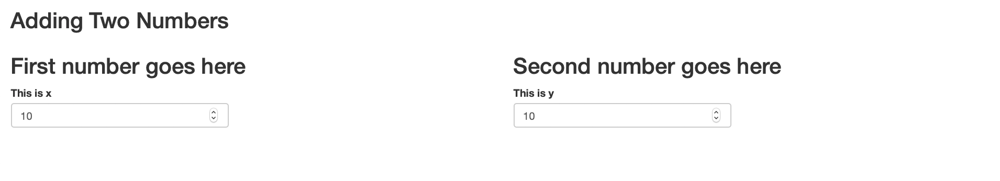
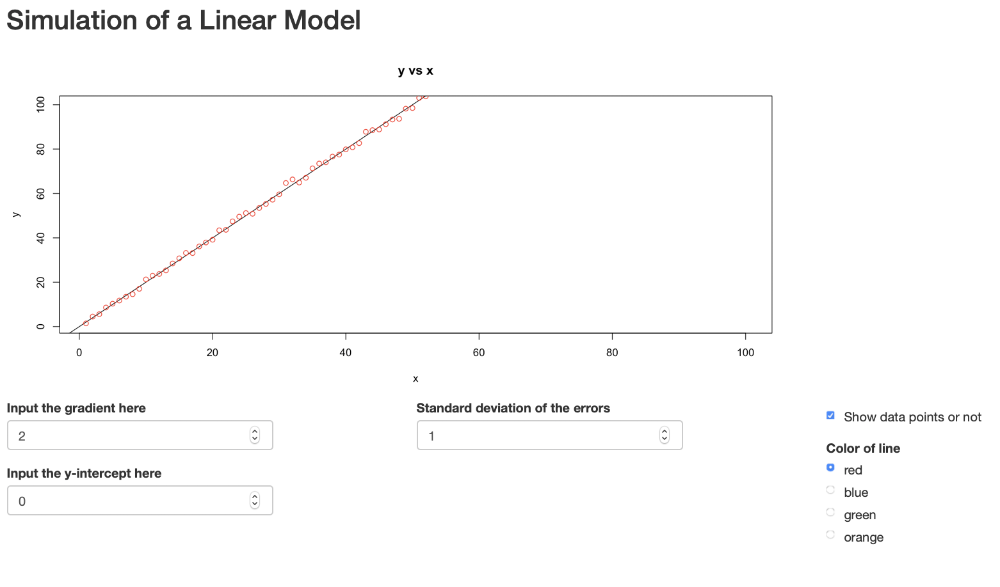
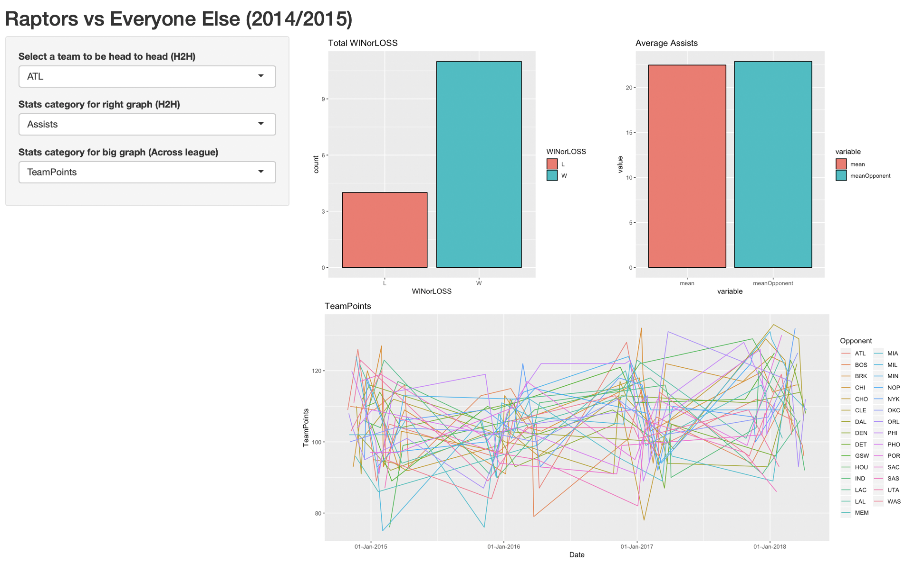

Introduction
Today I hosted our first data science meetup at [Hacker Collective]1. The title of the meetup was "Building Reactive Data Applications with Rshiny". Rshiny helps you build quick visualisations of your data; It is a great way to visualise and observe changes in data while tweaking input values. Think "Turning knobs and seeing a graph change before your eyes". You can also see other examples [here]2.
Unfortunately, the framework is not well-known outside of the R community. One of the primary reasons that someone would use RShiny is if they are familiar with the R language, however it maintains its popularity in statistical research.
Tutorial
In this tutorial, we teach you how to build an app that adds two numbers. Hopefully, you will understand and learn enough concepts to build a full-fledged RShiny application.
Rshiny is relatively easy to graps compared to the deeper and messier art of building a web site from scratch. For a website, you may need to know javascript, html and css. Whereas the only pre-requisite to build an rshiny application is knowing how to programme in R.
Installation
I suggest the best way to carry out this tutorial is by using [RStudio Cloud]3; that way you do not have to carry out any installation locally on your computer.
Rshiny Model
In web application programming, you learn client-server architecture. The idea is that your "data model" (as they call it) always resides on the server. That means any changes in the client should immediately update the changes in the server before changing the client again. Rshiny adopts similar principles except that they call it the UI (the client) and the server (the server)
Think of it as a take-out pizza place.
Pepperoni Pizza is ordered by a customer (the client)
The waiter tells the kitchen (the server) to cook up a Pepperoni Pizza
The kitchen then passes the pizza to back to the customer.
Although you might not know fundamentals of client-server interaction, you will find that knowing this thought sequence will help you get the hang of Rshiny.
#you can define global objects here
ui <- fluidPage(
#ui goes here
)
server <-function(input,output){
#logic goes here
}
shinyApp(ui,server) #this runs the appA whole entire RShiny app can be fit into a single file. It consists of 2 components mainly: the ui variable and the server function.
- ui variable:
- layouts and panels
- input widgets
- ui outputs
- server function:
- render functions
The purpose of the ui variable is to handle anything visual. Layout and panels is similar to the "divs" and "containers" of the application. Input widgets are components that enable the user to execute input, e.g. slider, button. UI outputs are the components which display the output, e.g. graph, text.
The server function executes all the logic of the application and renders it as an object using an input and output variable. For example, if I had a calculator that received two numbers and added them together. The server function would have two separate variables that stores both inputs and then outputs a number (the sum between the two stored variables). The additional pattern is that the output is not passed to the ui as a number; instead, it is rendered as some type (such as text or plot) so that the ui knows how to display/output it.
Building a Reactive App
Once you get the simple concept of simply passing variables from ui to server and/or from input to output then you would have understood all that needs to be known about RShiny.
Add the layout
Here we modify the ui. We can have a rough sketch of what the ui will look like without executing any functionality.
ui = fluidPage(
titlePanel("Adding Two Numbers"),
fluidRow(
column(6,
h2("First number goes here")
),
column(6,
h2("Second number goes here")
)
),
fluidRow(
mainPanel(
#the result is written here
)
)
)
We first added a title for the application using `titlePanel()`. Here we added a first row to our page; and two columns within that row. RShiny uses bootstrap2, which follows rules of responsive design. The bootstrap concept is simple: there are 12 spaces in a row and you can distribute however many spaces to be included into each column as long as your the sum of spaces is 12. In this example, we created two columns, each having 6 spaces each. Equivalently, we are able to create three columns with 4 spaces each, so on and so forth.
RShiny integrates common html tags, such as `<h2></h2>`. Although how we write it is in the form of a function `h2(text)` in R.
We included an additional row with a `mainPanel()`. The `mainPanel()` is usually the place where you display the main output of your application; in this case, it is the sum.
ui = fluidPage(
titlePanel("Adding Two Numbers"),
fluidRow(
column(6,
h2("First number goes here"),
numericInput("x","this is x",10)
),
column(6,
h2("Second number goes here"),
numericInput("y","this is y",10)
)
)
)
Next, we need only include the input widgets. To do that we use `numericInput()` widget: it takes a number in a text box and will return an error if the input is not a number.
As you can see, we include a widget with id of "x", a label of "this is x", and a default value of 10. "id's" are the associative name that enables you to pass the variables between ui and server.

Adding the Logic and Rendering
"We have the inputs. Now how do we handle the server function?". The easiest way to perform this task is to include both the inputs directly into a rendering function. By default, whatever "id's" of widgets in the ui will become accessible to the server through the input variable.
server <-function(input,output){
output$sum= renderText({
paste("x+y",input$x+input$y)
})
}
shinyApp(ui,server) #this runs the app
But, if you execute this, nothing (additional) will show on the front of the application. This is because a text object is rendered but not displayed/outputted yet.
Passing back to the UI
To pass the data back to the ui, we simply have to to associate the rendered object with an output in the ui via id too. Here we added a `textOutput()` component to take the id of "sum" which targets the rendered text output inside the server function.
ui = fluidPage(
titlePanel("Adding Two Numbers"),
fluidRow(
column(6,
h2("First number goes here"),
numericInput("x","this is x",10,min=1,max=100)
),
column(6,
h2("Second number goes here"),
numericInput("y","this is y",10,min=1,max=100)
)
),
fluidRow(
mainPanel(
h1(textOutput("sum"))
)
)
)
If you think back, this is analagous to our pizza model,
- Take input from the ui
- Process the input as some data and attach it to the output
- Pass the output back to the ui

Notes on Reactivity
Remember I said that the easiest way to pass inputs to a server is to include it directly into a rendering function. This is not the best way (generally).
There is a significant problem of including both `input$x` and `input$y` in a rendering function. The reason is due to efficiency. If a person changes `input$x` from the slider, the `renderText()` will re-evaluate not only `input$x` but also `input$y`. Why are we doing two re-evaluations when only one is required – this becomes a problem of efficiency.
To avoid this, we create auxiliary variables `x` and `y`, which are called reactive conductors. Reactive conductors cache their values and know when the values have become outdated – see [here]4. The benefit of creating this separation is if `x()` was a very complicated function that takes a long time to run. If I touch the slider for `y`, I will not have to re-evaluate `x` all over again.
server <-function(input,output){
x<-reactive({input$x})
y<-reactive({input$y})
output$sum= renderText({
x()+y()
})
}
In this example, we are not worried because the rendering function is only re-evaluating a single number; we can afford the such lag. However, let me assure you that when you are dealing with 10,000 rows of data, a simple filter can cost a latency of 2-3s to the user's experience. The more complex the filtering operation, the worse.
Important Things to Remember
From using Rshiny, I have noticed a few common mistakes that I always carry out. Hopefully, this will help you.
All components in ui are separated by commas, whereas, variables, reactive functions and rendering functions within the server function are dealt with like normal contents of a function – there is no separator.
Reactive rendering functions are those `({})` enclosed in additional curly brackets, e.g. `renderText({})`.
When adding reactive variables to the server function remember to use `x()` not `x`. `x` will just return the character string of the function or the unevaluated form of the function.
Typically, RShiny apps are not stored in a single file but three different files: `ui.R`,`server.R` and `global.R`.
Use the `observe({})` function to debug and prototype reactive variables. Simply, print them within the function, e.g. `print(x())`.
Summary
There you have it. You have made an RShiny app in just minutes. To summarise, we have to get into the habit of thinking of the sequence of events. When a ui is edited, e.g. a slider moved, we have to handle the input in the server. After a server handles the data, we have to render it and pass it back top the ui. It is really that simple. Have fun building your shiny application!
Contribute
To play with this code, you can see it all [here]5. I welcome any suggestions. In this tutorial, you saw the `appReactive.R` file in action. Here are three other example applications which I built in the same directory.
- `appLM.R`: An application that generates random points from a linear model with gradient and y-intercept parameters.

`appSchool.R`: A visualisation that enables teachers to decide appropriate grade benchmarks by looking at frequency of students in each grade category. Contains backward update logic of sliders.
`appNBA.R`: A visualisation of a popular NBA dataset on kaggle. Here we observe head-to-head statistics from 2014-2018 between Toronto Raptors and other teams. This app uses modern libraries like dplyr and ggplot.
